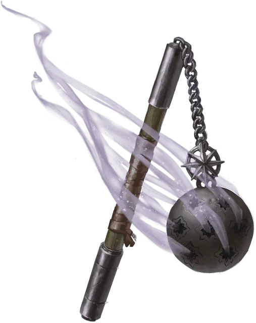

Кадило фанатика
Devotee’s Censer
Оружие (цеп), редкое (требуется настройка жрецом или паладином)

Рекомендованная стоимость 501-5 000 зм
Закруглённое навершие этого цепа имеет множество крошечных отверстий, расположенных в виде символов и узоров. Цеп считается для вас священным символом. Когда вы попадаете атакой, используя этот магический цеп, цель получает дополнительно 1к8 урона излучением.
Бонусным действием вы можете произнести командное слово, чтобы заставить цеп испускать прозрачное облако ладана в радиусе 10 футов в течение 1 минуты. В начале каждого вашего хода вы и любые другие существа в этом облаке ладана восстанавливаете 1к4 хитов. Это свойство не может быть использовано вновь до следующего рассвета.